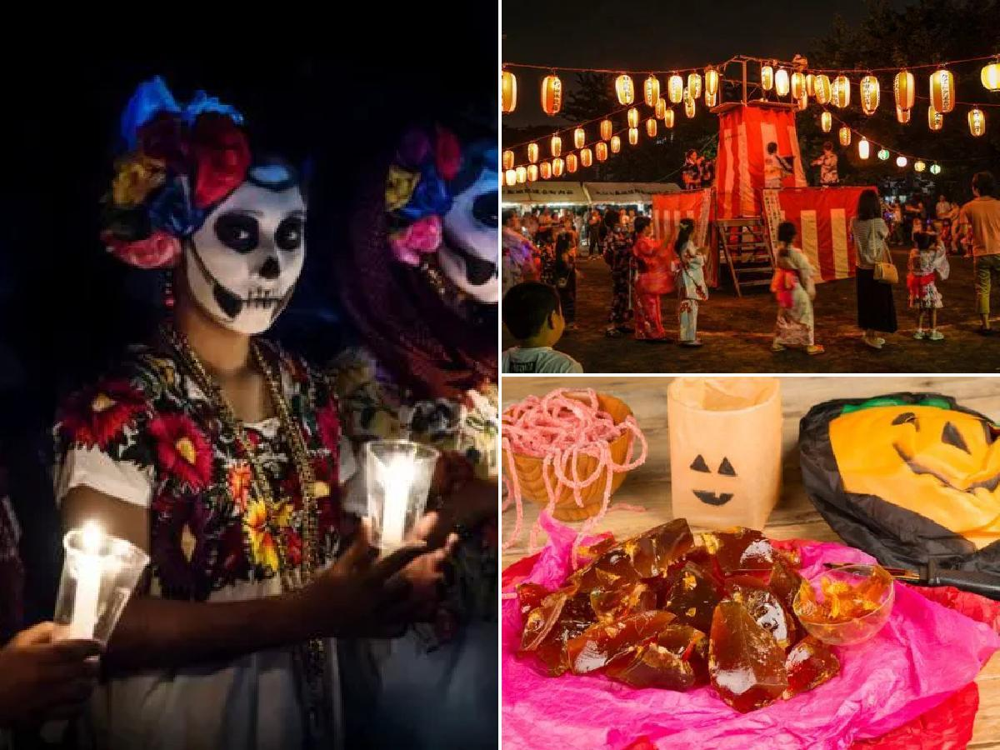
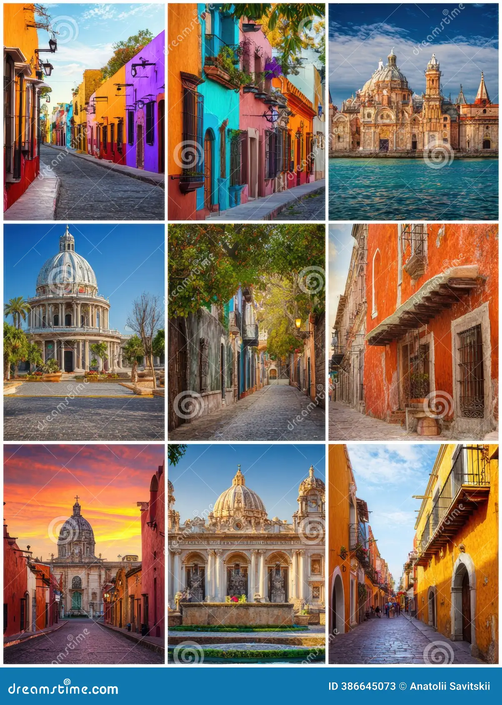

Cultura alrededor del mundo
=======Cultura alrededor del mundo
Viajar también significa conocer nuevas culturas, tradiciones, idiomas y formas de vida. Cada país tiene una identidad única que se refleja en su comida, música, celebraciones y costumbres.
Gastronomía
 =======
La comida es una de las mejores formas de conocer la cultura de un lugar.
Desde el sushi en Japón hasta la pizza en Italia o el ceviche en Perú,
cada plato cuenta una historia.
=======
La comida es una de las mejores formas de conocer la cultura de un lugar.
Desde el sushi en Japón hasta la pizza en Italia o el ceviche en Perú,
cada plato cuenta una historia.
Festivales y tradiciones
=======Festivales y tradiciones
>>>>>>> 8290acbfae1d1df2e83954d5f64f77b4df38ffcaMuchos países celebran festivales llenos de música, baile y colores. Estas celebraciones muestran la historia y las creencias de cada cultura.

Arte y arquitectura
=======Arte y arquitectura
>>>>>>> 8290acbfae1d1df2e83954d5f64f77b4df38ffcaMuseos, templos, catedrales y monumentos reflejan la historia de las civilizaciones y su evolución a lo largo del tiempo.

======= >>>>>>> 8290acbfae1d1df2e83954d5f64f77b4df38ffca